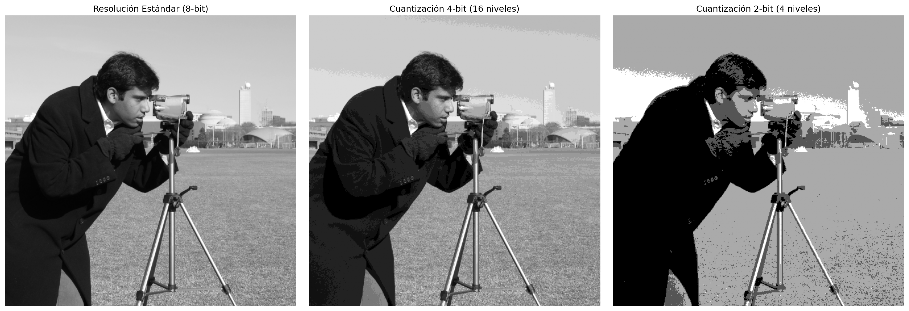
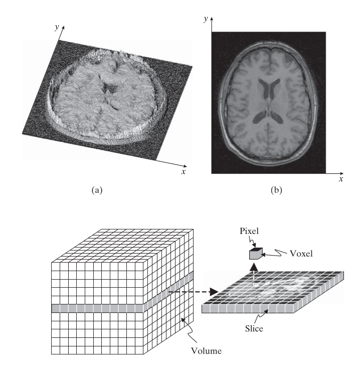
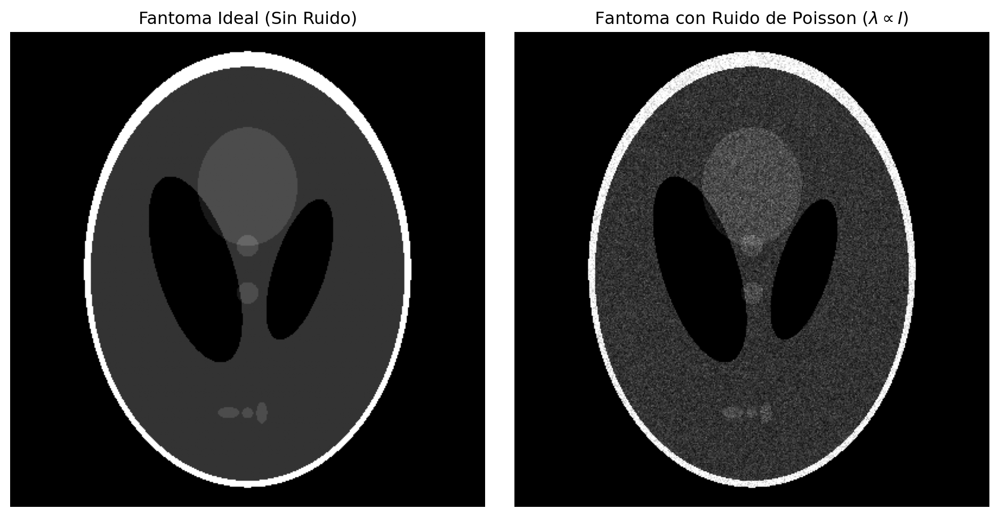
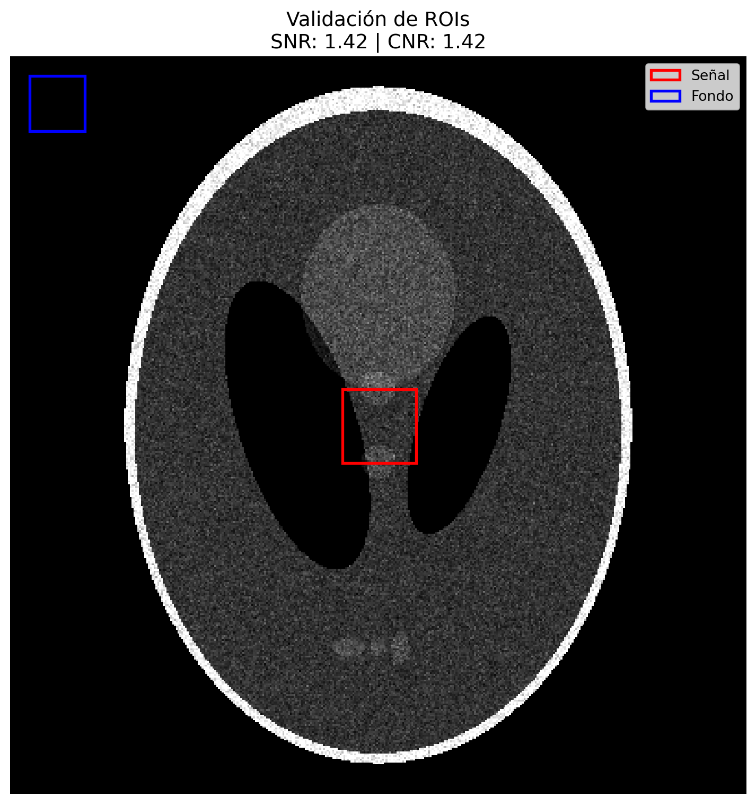

Procesamiento Avanzado de Imágenes Médicas
Ingeniería Biomédica
PAIM
Procesado Avanzado de Imágenes Médicas - PAIM
Fundamentos Matemáticos
Introducción al Procesamiento Biomédico
- La imagen médica es un proceso de extracción de información biológica fidedigna.
- Impacto directo en la interpretabilidad diagnóstica.
- Base fundamental para el desarrollo de sistemas de IA Confiable.
1. Representación Digital
Modelado de la Digitalización
Una imagen continua \(f(x,y)\) se discretiza en \(I[m,n]\) mediante:
- Muestreo Espacial: Determina el tamaño del píxel (\(\sim 100-200 \mu m\) en radiografía).
- Cuantización: Resolución de contraste.
- Estándar Clínico: 12-16 bits (Escala Hounsfield).
- Falso contorneo: Artefacto por baja profundidad de bits.
1. Representación Digital
import numpy as np
import matplotlib.pyplot as plt
from skimage import data, img_as_float, color
def simulate_quantization(image, bits):
"""
Simula el efecto de reducir la profundidad de bits.
"""
levels = 2**bits
return np.round(image * (levels - 1)) / (levels - 1)
# Cargamos una imagen de prueba y la normalizamos
image = img_as_float(data.camera())
# Simulamos diferentes profundidades
q_8bit = simulate_quantization(image, 8)
q_4bit = simulate_quantization(image, 4)
q_2bit = simulate_quantization(image, 2)
fig, axes = plt.subplots(1, 3, figsize=(18, 6))
axes[0].imshow(q_8bit, cmap="gray")
axes[0].set_title("Resolución Estándar (8-bit)")
axes[1].imshow(q_4bit, cmap="gray")
axes[1].set_title("Cuantización 4-bit (16 niveles)")
axes[2].imshow(q_2bit, cmap="gray")
axes[2].set_title("Cuantización 2-bit (4 niveles)")
for ax in axes:
ax.axis("off")
plt.tight_layout()
plt.show()1. Representación Digital

2. Percepción Visual y Color
- Limitación de RGB: Falta de uniformidad perceptual para análisis cuantitativo.
- Espacio CIELAB:
- \(L^*\): Luminosidad (información estructural).
- \(a^*, b^*\): Componentes cromáticos.
- Aplicación: Crítico en patología digital y endoscopia.
3. Caracterización del Ruido Clínico
El ruido es un proceso estocástico dependiente de la física de adquisición:
- Ruido de Poisson (Cuántico):
- Dominante en Rayos X y TC.
- \(\sigma^2 \propto \text{Intensidad de la señal}\).
- Ruido Gaussiano (Electrónico):
- Originado por la instrumentación y digitalización.
3. Caracterización del Ruido Clínico
::: {#cell-Poisson Noise .cell execution_count=3}

:::
4. Métricas de Desempeño
\[SNR = \frac{\mu_{signal}}{\sigma_{signal}}\]
\[CNR = \frac{\mu_{signal} - \mu_{background}}{\sqrt{\sigma_{signal}^2 + \sigma_{background}^2}}\]
Para que una patología sea detectable, debe superar el umbral de ruido:
Contrast-to-Noise Ratio (CNR): \[CNR = \frac{|\mu_{tumor} - \mu_{sano}|}{\sqrt{\sigma_{tumor}^2 + \sigma_{sano}^2}}\]
- Evalúa la diferencia de intensidad entre tejidos normalizada por el ruido ambiental.
4. Métricas de Desempeño
Métricas de Calidad:
SNR: 1.4247
CNR: 1.4247
5. Resolución Espacial y la MTF
La resolución no es solo el tamaño de la matriz, es una propiedad dinámica.
- PSF (Point Spread Function): Respuesta del sistema a un punto infinitesimal \(\delta(x,y)\).
- MTF (Modulation Transfer Function): \[MTF(u,v) = \frac{|\mathcal{F}\{PSF\}|}{|\mathcal{F}\{PSF\}_{(0,0)}|}\]
- Cuantifica la pérdida de contraste en función de la frecuencia espacial (\(lp/mm\)).
6. Determinación Práctica: Método del Borde
Dado que no existen “puntos perfectos”, se utiliza el borde de una placa de plomo:
- ERF (Edge Response Function): Perfil perpendicular al borde.
- LSF (Line Spread Function): Derivada de la ERF (\(LSF(x) = \frac{d}{dx}ERF(x)\)).
- MTF: Transformada de Fourier de la LSF.
7. Interpretación Clínica de la MTF
- \(f_{50}\): Frecuencia donde se pierde el 50% del contraste (nitidez percibida).
- \(f_{10}\): Límite de resolución detectable por el ojo humano.
- Mamografía: Requiere MTF alta en frecuencias elevadas (\(10-15 lp/mm\)).
- TC Corporal: Centrado en frecuencias bajas para contraste de tejidos blandos.
Conclusiones
- La cuantización limita la sensibilidad del contraste.
- El ruido cuántico impone el límite fundamental de detectabilidad.
- La MTF es la métrica definitiva para validar la cadena de adquisición.
- Sin métricas objetivas (CNR, MTF), la validación de IA carece de sustento físico.